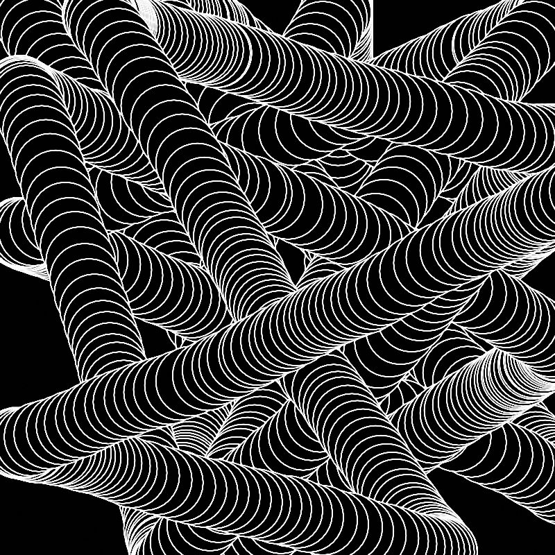
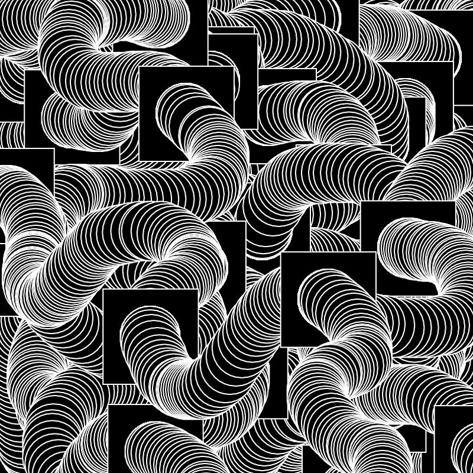
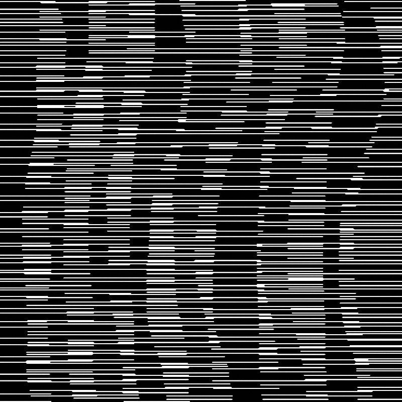

Exploration of pattern and movement thorough creative coding.
Coordinate Converter

With creative code set up, the artboard coverts a coordinate of your mouse into a dot, a line or a shape. Having many of these elemts combined, the graphic output refelcts the track and speed of your movement.
The concept of time was injected into the body of an image. Unlike a traditional painting, which captures a certain point of time, it extends that point into a "line". Therefore, it records the "antecedently" and "subsequently", and becomes a video-like still image.


